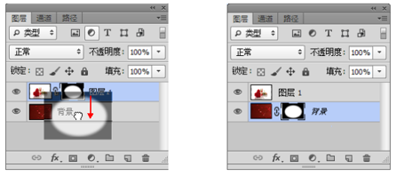

蒙版
初识蒙版
蒙版的类型
在 Photoshop 中，蒙版有快速蒙版、剪贴蒙版、矢量蒙版和图层蒙版 4 种。 + 快速蒙版：是一种用于创建和编辑选区的功能。 + 剪贴蒙版：通过一个对象的形状来控制其他图层的显示区域。 + 矢量蒙版：通过路径和矢量形状控制图像的显示区域。 + 图层蒙版：通过蒙版中的灰度信息来控制图像的显示区域。
认识“属性”面板
在“属性”面板中，可以对所选图层的图层蒙版以及矢量蒙版的“浓度”和“羽化”属性进行调整。执行“窗口 > 属性”命令，可以打开“属性”面板。
快速蒙版
创建快速蒙版
打开图像，单击工具箱中的“以快速蒙版模式编辑”按钮或按 Q 键，可以进入快速蒙版编辑模式。此时在“通道”面板中可以观察到一个快速蒙版通道。
红色的区域表示未选中的区域，非红色区域表示选中的区域。单击工具箱中的“以快速蒙版模式编辑”按钮
或按 Q 键退出快速蒙版编辑模式，可以得到想要的选区。另外，在快速蒙版模式下，还可以使用滤镜来编辑蒙版。
剪贴蒙版
什么是剪贴蒙版
剪贴蒙板由两部分组成：基底图层和内容图层。基底图层是位于剪贴蒙版最底端的一个图层，内容图层则可以有多个。其原理是通过使用处于下方图层的形状来限制上方图层的显示状态，也就是说，基底图层用于限定最终图像的形状，而内容图层则用于限定最终图像显示的颜色图案。
- 基底图层：基底图层只有一个，它决定了位于其上面的图像的显示范围。如果对基底图层进行移动、变换等操作，那么上面的图像也会随之受到影响。
- 内容图层：内容图层可以是一个或多个。对内容图层的操作不会影响基底图层，但是对其进行移动、变换等操作时，其显示范围也会随之而改变。需要注意的是，剪贴蒙版虽然可以应用在多个图层中，但是这些图层不能是隔开的，必须是相邻的图层。
剪贴蒙版与图层蒙版的差别
1、从形式上看，普通的图层蒙版只作用于一个图层，给人的感觉好像是在图层上面进行遮挡一样，但剪贴蒙版却是对一组图层进行影响，而且是位于被影响图层的最下面。
2、普通的图层蒙版本身不是被作用的对象，而剪贴蒙版本身是被作用的对象。
3、普通的图层蒙版仅仅是影响作用对象的不透明度，而剪贴蒙版除了影响所有内容图层的不透明度外，其自身的混合模式及图层样式都将对内容图层产生直接影响。
创建剪贴蒙版
1.选择“内容”图层，执行“图层 > 创建剪贴蒙版”命令或按 Alt+Ctrl+G 组合键。
2.在“内容”图层单击鼠标右键，然后在弹出的菜单中选择“创建剪贴蒙版”命令。
3.先按住 Alt 键，然后将光标放置在“内容”图层和“形状”图层之间的分隔线上，待光标改变形状时单击。
释放剪贴蒙版
1.选择“内容”图层，“图层 > 释放剪贴蒙版”命令或按 Alt+Ctrl+G 组合键，即可释放剪贴蒙版。
2.在“内容”图层单击鼠标右键，然后在弹出的菜单中选择“释放剪贴蒙版”命令。
3.先按住 Alt 键，然后将光标放置在“内容”图层和“形状”图层之间的分隔线上，待光标改变形状时单击。
剪切蒙版练习
调整内容图层顺序
与调整普通图层顺序相同，单击并拖动即可调整内容图层的顺序。需要注意的是，一旦移动到基底图层的下方就相当于释放剪贴蒙版。
编辑内容图层
当对内容图层的“不透明度”和“混合模式”进行调整时，只有与基底图层的混合效果发生变化，不会影响剪贴蒙版中的其他图层。

编辑基底图层
当对基底图层的“不透明度”和“混合模式”调整时，整个剪贴蒙版中的所有图层都会以设置的为“不透明度”数值以及“混合模式”进行混合。
为剪贴蒙版添加图层样式
若要为剪贴蒙版添加图层样式，需要在基底图层上添加，添加方式与为普通图层添加图层样式的方式相同。
加入剪贴蒙版
在已有剪贴蒙版的情况下，将一个图层拖动到基底图层上方。即可将其加入到剪贴蒙版组中作为新的内容图层。
移出剪贴蒙版
将内容图层移到基底图层的下方就相当于将其移出剪贴蒙版组。
图层蒙版
图层蒙版的工作原理
图层蒙版与矢量蒙版相似，都属于非破坏性编辑工具。但是图层蒙版是位图工具，通过使用“画笔工具”、“填充”命令等处理蒙版的黑白关系，从而控制图像的显示与隐藏。在创建调整图层、填充图层以及为智能对象添加智能滤镜时，Photoshop 会自动为图层添加一个图层蒙版，可以在图层蒙版中对调色范围、填充范围及滤镜应用区域进行调整。在 Photoshop 中，图层蒙版遵循“黑透明、白不透明”的工作原理。
创建图层蒙版
1、选择要添加图层蒙版的图层，执行“图层 > 图层蒙版 > 从透明区域”命令，可以为图层创建一个图层蒙版。
2、选择要添加图层蒙版的图层，然后在“图层”面板中单击“添加图层蒙版”按钮,可以为当前图层添加一个图层蒙版。
3、另外，在“属性”面板中单击“添加像素蒙版”按钮，也可以为当前图层添加一个图层蒙版。
从选区生成图层蒙版
1、如果当前图像中存在选区，单击“图层”面板中的“添加图层蒙版”按钮，可以基于当前选区为图层添加图层蒙版，选区以外的图像将被蒙版隐藏。
2、创建选区蒙版后，可以在“属性”面板中调整“浓度”和“羽化”数值，可以制作出朦胧的效果。
停用图层蒙版
1、执行“图层 > 图层蒙版> 停用”命令，或在图层蒙版缩览图上单击鼠标右键，然后在弹出的菜单中选择“停用图层蒙版”命令。停用蒙版后，在“属性”面板的缩览图和“图层”面板中的蒙版缩览图中都会出现一个红色的交叉线（×）。
2、选择图层蒙版，然后在“属性”面板下单击“停用/启用蒙版”按钮 。
应用图层蒙版
应用图层蒙版是指图像中对应蒙版中的黑色区域将被删除，白色区域保留下来，而灰色区域呈透明效果，并且删除图层蒙版。
1、在图层蒙版缩览图上单击鼠标右键，在弹出的菜单中选择“应用图层蒙版”命令，可以将蒙版应用在当前图层中。
2、应用图层蒙版后，蒙版效果将会应用到图像上，也 就 是 说，蒙版中的黑色区域将被删除，白色区域将被保留下来，而灰色区域将呈透明效果。
启用图层蒙版
在停用图层蒙版后，如果要重新启用图层蒙版，可以采用以下 3 种方法来完成。
（1）执行“图层 > 图层蒙版 > 启用”命令，或在蒙版缩览图上单击鼠标右键，然后在弹出的菜单中选择“启用图层蒙版”命令。
（2）直接在蒙版缩览图上单击，也可重新启用图层蒙版。
（3）选择蒙版，然后在“属性”面板中单击“停用 / 启用蒙版”按钮，同样可以重新启用图层蒙版。
删除图层蒙版
（1）如果要删除图层蒙版，可以选中图层，执行“图层 >图层蒙版 > 删除”命令。
（2）在蒙版缩览图上单击鼠标右键，然后在弹出的菜单中选择“删除图层蒙版”命令，也可以删除图层蒙版。
（3）将蒙版缩览图拖拽到“图层”面板下面的“删除图层”按钮上，然后在弹出的对话框中单 击“删除”按钮，可以删除该图层蒙版。
（4）选择蒙版，然后直接在“属性”面板中单击“删除蒙版”按钮，也可以删除该图层蒙版。
转移图层蒙版
单击选中要转移的图层蒙版缩览图并将蒙版拖拽到其他图层上，即可将该图层的蒙版转移到其他图层上。
替换图层蒙版
如果要用一个图层的蒙版替换另外一个图层的蒙版，可以将该图层的蒙版缩览图拖拽到另外一个图层的蒙版缩览图上，然后在弹出的对话框中单击“是”按钮。。

复制图层蒙版
如 果 要 将 一 个 图 层 的 蒙 版 复 制 到 另 外 一 个 图 层 上，可 以 按 住 Alt 键 将 蒙 版 缩 览 图 拖 拽 到 另 外 一 个 图 层 上。
蒙版与选区的运算
在图层蒙版缩览图上单击鼠标右键，在弹出的菜单中可以看到 3 个关于蒙版与选区运算的命令。
蒙版选区运算练习
矢量蒙版
说明
矢量蒙版是矢量工具，可以钢笔或形状工具在蒙版上绘制路径形状控制图像的显示与隐藏，并且矢量蒙版可以调整路径节点，从而制作出精确的蒙版区域。
创建矢量蒙版
选择图层，在“属性”面板中单击“添加矢量蒙版”按钮即可为其添加一个矢量蒙版。添加矢量蒙版后，可以使用“矩形工具” 在矢量蒙版中绘制一个圆角矩形路径，此时矩形外的图像将被隐藏。
绘制并选择闭合路径，执行“图层 > 矢量蒙版 >当前路径”命令，可以基于当前路径为图层创建一个矢量蒙版。
在矢量蒙版中绘制形状
创建矢量蒙版后，可以继续使用钢笔工具组或形状工具在矢量蒙版中绘制形状。
将矢量蒙版转换为图层蒙版
在蒙版缩览图上单击鼠标右键，然后在弹出的菜单中选择“栅格化矢量蒙版”命令。栅格化矢量蒙版后，蒙版就会转换为图层蒙版，不再有矢量形状存在。
删除矢量蒙版
可以在蒙版缩览图上单击鼠标右键，然后在弹出的菜单中选择“删除矢量蒙版”命令。执行“图层 > 矢量蒙版 > 删除”命令，也可以删除矢量蒙版。
编辑矢量蒙版
针对矢量蒙版的编辑主要是对矢量蒙版中路径的编辑， 除了可以使用钢笔工具组、形状工具在矢量蒙版中绘制形状以外，还可以通过调整路径锚点的位置改变矢量蒙 版 的 外 形， 或 者 通过变换路径调整其角度大小等。
链接/取消链接矢量蒙版
在默认状态下，图层与矢量蒙版是链接在一起的（链接处有一个 图标），当移动、变换图层时，矢量蒙版也会跟着链接/取消链接矢量蒙版在默认状态下，图层与矢量蒙版是链接在一起的（链接处有一个 图标），当移动、变换图层时，矢量蒙版也会跟着发生变化。如果不想变换图层或矢量蒙版时影响对方，可以单击链接图标 取消链接。如果要恢复链接，可以在取消链接的地方单击，或者执行“图层 > 矢量蒙版 > 链接”命令。
为矢量蒙版添加效果
可以像对普通图层一样，向矢量蒙版添加图层样式，只不过图层样式只对矢量蒙版中的内容起作用，不会影响隐藏的部分。